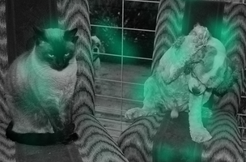

ArXiv
Preprint

Source Code
Github
Interactive
Demo
How does a VLM decide what to describe first, what to describe next, and when to stop?
A vision-language model, or VLM, looks at a picture and answers questions about it in words. Ask one what animals are in a photo, and it names them one at a time: a dog, then a cat, then a horse. It rarely names the same animal twice, and it rarely skips one. Yet a picture has no reading order. Nothing in a photo says the dog comes before the cat. So something inside the VLM must decide what to describe next, and keep track of what it has already said.
We opened up a VLM and traced how it does this. We find that the VLM plans on the image itself. To answer a question, it does not look up the answer directly. It first finds where the answer is in the image, and keeps a pointer to that place. It passes this pointer along to the token where the answer will be written. There, a separate set of attention heads follows the pointer back to the image and fetches what is there.
The VLM uses the same pointers to keep track of what it has already said. Every answer it writes, it ties back to the place in the image the answer came from. Before it writes the next answer, it looks back at these places to see how far it has come, and moves on to the nearest place it has not described yet. So the plan is not a list of words kept somewhere inside the VLM. It is a set of pointers into the image, and the VLM reads them again at every step, much like notes on a whiteboard.
How does a VLM read a picture and a question?
You give a VLM a picture and a question, and it writes an answer in words. Inside, it chops the picture and the question into small pieces called tokens and passes them up a stack of 36 layers. Small parts called attention heads let each token pull in information from the tokens before it. That is all you need to follow along. If you want to see how it works, the primers below zoom in one level at a time: the transformer block, the attention inside it, one attention head, and how a picture becomes tokens.
Primer 1: what is a transformer block?
Almost every modern language model, VLMs included, is a transformer. It reads text as a row of tokens, small word pieces. Each token carries a running note of everything the VLM knows about it so far. This note is called the residual stream, and you can picture it as a straight line running up through the VLM.
This is the simplest transformer block. It does two things, in order. Attention reads the stream, pulls in information from other tokens, and adds it back. Then the MLP reads the stream and works on this token alone, and adds its result back too. A model is just many of these blocks stacked on top of each other. Ours has 36, which we call its layers.
Here is a whole sentence going through two blocks. We follow the last token.
Primer 2: what is inside attention?
Zoom in one level: open the attention box from the transformer block.
Primer 3: what happens inside one attention head?
Zoom in one more level: open a single attention head. Each head does a small search over the earlier tokens, using three things: a query, keys, and values. Click through to follow one head at the word it, step by step.
Primer 4: how does a VLM read a picture?
Everything so far was about words. Here is how a picture gets in.
One more fact matters for this story. A VLM writes its answer one token at a time, and every new token goes up the whole stack of layers again. The VLM has no notepad. It can't write down "I already said dog" and check it later. Each time it starts a new word, it has to work out again, from the words it has already written, what is left to say.
So how does a VLM pick the next thing to describe, and how does it keep track of what it has already described?
Why do we study a strip of panels instead of photos?
Photos are messy. We can't control which objects the VLM will mention, or in what order, so it is hard to test anything cleanly. So we built a simple puzzle where we control everything. Each picture is a strip of panels. Each panel holds one shape with a letter inside it. We ask the VLM for the letter inside a named shape, and we start its reply with "Answer:" so that the next token it writes is the letter.
We ask about a shape, not about "panel 2", on purpose. To answer, the VLM first has to find where the star is, and only then read the letter there. That gives us two separate jobs to look for inside the VLM: finding the place, and reading it.
Three tokens of this puzzle matter for everything that follows, so we give them names. The shape token is the word that names the shape, star. The colon token is the : after "Answer", the last token before the VLM writes its answer. The answer token is the letter it writes, T.
The puzzle also has a list version. When the same shape sits in several panels, we ask for the letter inside each heart, and the VLM lists the letters from left to right. After each letter it writes a comma, and the comma token is where it writes the next letter from. This is where it has to remember what it has already written.
Later, we check that what we find on these strips also happens on real photos.
What is the plan?
Here is what we found, in one picture, before we show how we found it. Two ideas carry the whole story. A pointer is a note inside the VLM that says which panel to look at, like "look in panel 2", without saying yet what is there. Progress is a note that says how far the list has come, like "done up to panel 3".
The VLM makes and uses these notes in a few steps, and each step runs through a small set of attention heads. In Bind, the binding heads at the shape token match the shape against the picture and make a pointer to every matching panel. In Relay, the relay heads carry that pointer to the token where the answer is written. In Gaze, the gaze heads follow the pointer back to the picture and read the letter. A list adds two more steps. In Progress, the same binding heads tie each written letter to the panel it came from, and the comma token picks this up as progress. In Select, the VLM takes the nearest matching panel after the progress, or stops.
Click through the steps below. Each column is one token, drawn as its stack of 36 layers.
a pointer: which panel progress: done up to here the letter read there Each dot is one attention head at its layer. Click a dot to see where it looks.
Look at any head
Pick a group, then a head. The picture shows where that head looks, and the bars show which text tokens it reads.
Click on any cell
Test the plan: guess the letter before you look
Here we copy one internal state from one run of the VLM, the source run, into another, the target run. This copy is called a patch, and the sections below explain it. Guess the letter the target writes, then check: it tells us what the copied state carried.
How can we tell what the VLM is thinking?
We can't ask the VLM what it is thinking. But we can do something better. We can run the VLM twice, copy one internal state from the first run into the second, and see how the answer changes. This is called activation patching.
Concretely, the source run asks for the heart in one picture, and the target run asks for the star in a different picture. We copy one state of the source run into the target run, at the same token and the same layer, and leave everything else alone. Then we read the letter the target writes. We build the two pictures so that each kind of information the copied state could carry makes the target write a different letter. So the letter tells us what the state carried.
Primer: what is activation patching?
Activation patching is how we test what a piece of the VLM's work contains. Click through to see one patch.
Why does one letter tell us so much?
This only works if the letter tells us what the copied state carried. So we build every pair of puzzles so that each kind of information leads the target to a different letter.
The source's heart sits in panel 4, and the target's star sits in panel 2. Every letter in the target means something different:
One more check runs through every experiment. Whenever we patch a set of heads, we also patch the same number of heads picked at random from the same layers. If the random heads do nothing, the effect belongs to the heads we found, not to patching heads in general.
Our first patch copies the whole state of the colon token, one layer at a time. In the low layers, the patch changes nothing, and the target answers T. In layers 23 to 29, the target answers K: the copied state says "the answer is in panel 4", and the target goes and reads its own panel 4. From layer 30 on, the target simply copies the source's letter, D. So halfway up the stack, the colon token already holds a pointer. The VLM knows where the answer is, but has not yet read what it is.
Binding: where does the pointer come from?
If the colon token holds a pointer by layer 23, the pointer must have been made somewhere before it. So we repeated the patch at every token of the question, at every layer. Only one other token carries the pointer: the shape token, star, in layers 16 to 20. The VLM works out where the star is while it is still reading the question.
Next, we looked at the attention heads at the shape token. Concretely, we patched the output of one attention head at a time, for all 1,152 heads of the VLM, and ranked the heads by how much each patch pushed the target toward K. The top 16 heads, in layers 15 to 21, do the work. Patching these 16 together moves the pointer in most cases, while 16 random heads from the same layers almost never do. We call them binding heads, because they bind a word in the question to a place in the picture.
We can even split their job in two. Remember that a head compares its query, what it is looking for, with the keys of the image tokens, what each of them offers. When we patched only the queries, the target looked for a heart in its own picture and answered P. When we let the heads read only the source's image keys, the target looked for its own star among the source's shapes and answered R. When we patched both, the pointer itself moved. In plain words, the query says "I need a star", and the key answers "I am the panel with the star."

Relay: how does the pointer reach the answer?
The pointer is made at the shape token, but the answer is written several tokens later, at the colon token. Attention heads are the only parts of the VLM that move information between tokens. So some heads at the colon token must reach back to the shape token and fetch the pointer.
Concretely, we let one head at a time at the colon token read from the source run instead of the target run, and ranked the heads by how often the target switched to K. The top 16 heads, mostly in layers 19 to 23, carry the pointer. When we let them read one token at a time, they get the pointer mostly from the shape token, where the binding heads left it. We call them relay heads.
Two more tests tie the steps together. If we stop the relay heads from looking at the question, the target almost always loses its answer. The cleaner test goes the other way. We move the pointer with the binding heads in one run, and then let only the relay heads of a fresh target read from that run. Nothing else gets through, yet the target follows the moved pointer just as often. So the relay heads alone carry the pointer from the question to the answer.
Gaze: how does the VLM read the panel the pointer names?
At the colon token, the VLM now holds a pointer, but the letter is still in the picture. Some heads have to follow the pointer back and read it. Concretely, we patched the query of one head at a time at the colon token, and found 32 heads, in layers 19 to 34, that send the target to K. We call them gaze heads, because they decide where the VLM's gaze lands.
The pointer reaches the picture only through the gaze heads. If we move the pointer with the binding heads but keep the gaze heads' queries as they were, the moved pointer almost never changes the answer. And if we let the gaze heads read the source's picture while they follow the target's pointer, the target writes the source's letter. Most of these heads are among the Gaze Heads of our earlier work, which we found by watching where a model looks while it describes comic strips.
Do the gaze heads bring back a word, or an idea?
When the gaze heads read a panel, do they bring back the word for what they see, or the idea of it? To test this, we dropped the letters and asked about colored shapes instead, "What shape is the green marker?", in English, German, French, and Chinese. The VLM answers in the language of the question.
What the gaze heads bring back does not depend on that language. It looks almost the same for one picture asked in two languages, and very different for two pictures asked in one language. If we patch the gaze heads from a source run that asks in French about another picture, the target names the source's shape, but in its own language. So the gaze heads bring back the idea, not the word.
The language comes from a different set of 16 heads in the upper layers, which we call language heads. Patch them from a source run in another language, and the answer switches language while the shape stays the same. The last MLP layers then join the idea and the language into the final word.

Progress: how does the VLM keep its place in a list?
So far the VLM gives one answer. Now ask for the letter inside each heart. After it writes E, it has to know that the first heart is done and move on. And since it has no notepad, it has to work this out again from the letters it has already written.
The only tokens that know what has been written are the answer tokens and the comma tokens after them. So we copied the comma token from a source run that had written one letter into a target run that had written nothing. At layers 20 and 21, the target skips a panel it never answered from. It could only have learned that this panel was done from the copied state. So the comma token holds the VLM's progress.
What form does progress take? It could be a count, "two done". It could be a set, "panels 2 and 4 done". Or it could be a place, "done up to panel 4". We built pairs where each of these makes the target write a different letter. At layers 20 and 21 the answer is clear: progress is a place. It says "done up to here", and the VLM moves on to the next matching panel after it.
Where does progress come from? From the same binding heads. At each answer token, they tie the letter just written back to the panel it came from. If we quietly move a written letter one panel to the right in the source picture, and let the binding heads read it there, the target's next answer also moves one panel to the right. So the binding heads do the same job twice. First they tie the question to the picture, then they tie each answer to the panel it came from. The comma token then reads this from the answer token.

Select: how does the VLM choose the next panel?
With the matching panels and the progress both at the comma token, the VLM still has to choose which panel comes next. We can watch this choice without any patch, just by writing letters out of order for the VLM. With only the second heart written, it goes on to the third. With the third and then the first written, it goes back for the second. The rule is simple: take the nearest unwritten panel after the progress, and go back only when nothing is left to the right. When nothing is left at all, the same step makes the VLM stop. This choice is made at the comma token, in layers 20 to 25.
Does this happen on real photos too?
A strip of panels is a clean lab, but people ask about real photos. So we asked the VLM ordinary list questions about everyday photos, like "What animals are in this image?". At each comma token, the gaze heads look ahead at the animal the VLM is about to name. If we stop the comma token from seeing an animal already named, the VLM names it again. Setting the language heads to their English values turns answers in other languages into English. And the binding, relay, and gaze heads show up in every size of this VLM we tried, from 2 billion to 32 billion parameters.
Try it yourself: watch a VLM plan in your browser
Pick an image and a question, and watch the 2 billion parameter version of the VLM answer one token at a time. At the shape word, the page draws where the binding heads look. Before each token of the answer, it draws where the gaze heads look. Watch the gaze heads move to the next panel, or the next animal, before the VLM writes it.
On the photos, the VLM runs in your browser. This downloads about 1.2 GB of model weights once, and needs a browser with WebGPU, such as a recent Chrome or Edge on a laptop or desktop. In other browsers the page plays recordings of the same runs. The strips of panels are recordings of the full-size model, and play at once.
For all the experiments, checks, and numbers, see our paper.
Parallel work: does a code LLM plan the same way?
While we studied a VLM that reads pictures, we also ran a parallel project on language models that write code, with no pictures at all. That project asks how a model keeps a goal alive while it writes a long program. The answer it finds has the same shape as the plan on this page.
The next step is set before it is written. In the code LLM, a small set of attention heads, the goal heads, holds the next step a few tokens before the model starts to write it. In the VLM, the binding heads find the panel at the shape token, before any answer is written.
The request is read again, not carried along. The code LLM does not carry its goal forward from token to token. It keeps reading the goal again from the task description. The VLM does the same at every comma token, where it reads the question and the picture again.
Progress picks what comes next. The code LLM compares the goal it has just read with the code written so far, and that picks its next step. The VLM compares the matching panels with its progress, and that picks its next panel.
The two projects use different models and different tasks: Qwen2.5-Coder-32B and Llama-3.3-70B writing code there, Qwen3-VL-8B reading pictures here. Our hypothesis is that this is a property of transformers themselves. A transformer has a fixed number of layers, so it cannot keep one running state across many written tokens. Reading the request again at every step, and checking it against what is already written, may be how a transformer follows any task with many steps. We have tested this only in these two settings.
How does this connect to earlier work?
Earlier work found pieces of this plan in text-only models. Language models keep track of which thing goes with which detail by tagging each thing with a hidden label and following that label later (Feng and Steinhardt, 2024). They use a similar trick to follow who believes what in a story (Prakash et al., 2026). And they handle lists with filter heads (Sen Sharma et al., 2026), heads that pick out the items of a list that match a rule. Our binding heads do something similar over the panels of a picture.
In models that see pictures, Assouel et al. (2026) found that the words of a question build an index of the matching places in the picture. Our own earlier work on Gaze Heads found heads that look at the part of a picture being described, so that turning them turns the description.
These works explain how a model finds one place that answers a question. Here we show how these parts work together when the answer is a list, and we add the missing pieces: how the VLM tracks its progress through the picture and selects what to read next.
How to cite
The paper can be cited as follows.
bibliography
Rohit Gandikota, Arnab Sen Sharma, Adam Belfki, David Bau. "How VLMs Plan What's Next." arXiv preprint arXiv:2611.21600, 2026.
bibtex
@article{gandikota2026plan,
title={How VLMs Plan What's Next},
author={Gandikota, Rohit and Sen Sharma, Arnab and Belfki, Adam and Bau, David},
journal={arXiv preprint arXiv:2611.21600},
year={2026}
}